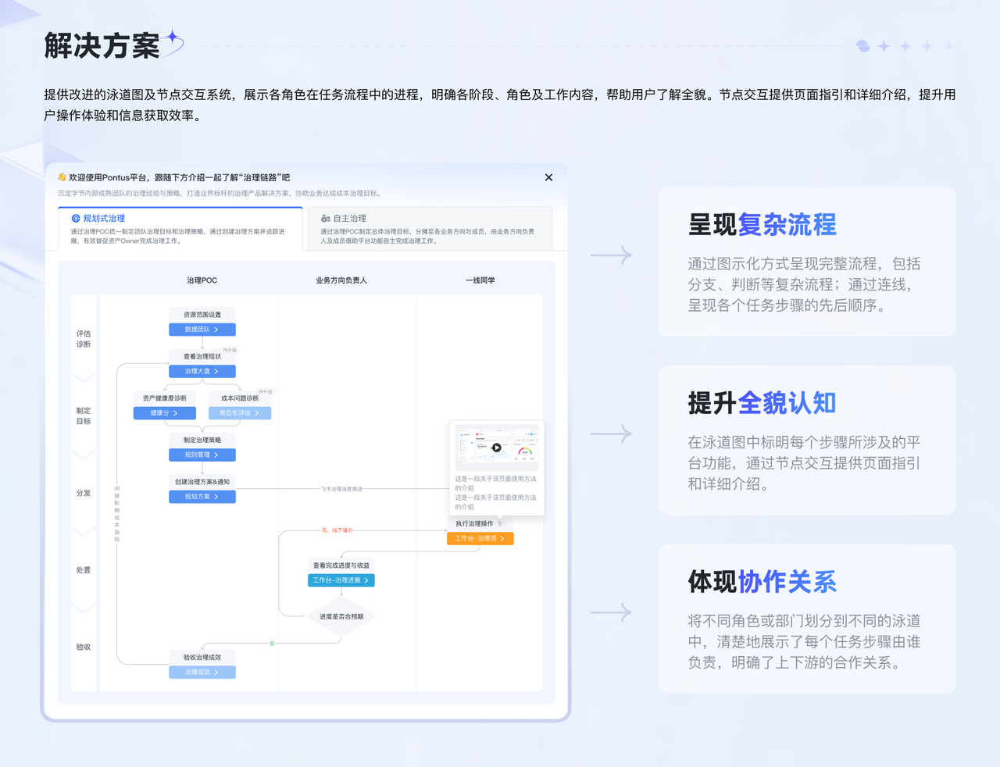

呈现真实流程
让用户看到任务全貌，理解从哪里开始、接下来做什么。
GUIDED WORKFLOW
当任务需要多个角色协作，逐个指向按钮的步骤提示，难以解释整个业务流程。泳道式引导把角色、步骤与协作关系放在同一张可交互的地图中。

治理工作经常需要管理者、治理负责人和一线同学共同完成。单一角色的步骤式提示、局部引导或静态说明，难以帮助用户理解跨模块的完整链路。
让用户看到任务全貌，理解从哪里开始、接下来做什么。
通过泳道区分不同角色，让交接与依赖关系可见。
将引导方案沉淀为组件与搭建工具，支持更多业务场景。
先梳理多角色参与的完整任务链路，识别单点气泡或静态图无法解释的协作与跳转关系。
将步骤放入对应角色的泳道，通过流程连接与交互入口，同时表达操作次序与跨角色协作。
沉淀设计组件，与前端共建泳道搭建工具，减少后续引导场景的重复设计和开发工作。
形成可复用的泳道式引导组件
与前端共同沉淀泳道搭建能力
复盘同时记录了发明专利相关产出；专利授权状态未在本页作进一步推断。
复杂流程的引导，应先帮助用户理解任务全貌，再进入局部操作。组件化能扩大方案价值，但仍需要在更多业务场景中验证适用范围与表达丰富度。